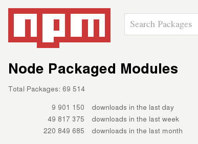

Enno Boland
Erfahrungen mit...?
- ... PHP, Ruby, Python?
- ... Javascript?
- ... Node.js?
Kann keine
Programmiersprache
sein
Erfinder von Programmiersprachen
|
Dennis Ritchie (C) |
 Bjarne Stroustrup (C++) |
Niklaus Wirth (Pascal) |
Yukihiro Matsumoto (Ruby) |
Bärte
Meet Brendan Eich

:-(
Basics
var foo;foo = 2;foo = 'abc';foo = "abc";console.log(foo);
Kontrollstrukturen
if ( ... ) { ... } else { ... }while ( ... ) {}for (var i; i < 100; i++) {}
{ }
Object
foo = new Object();
foo = {};
vgl. Hashtables
Alles ist ein Objekt
- Funktionen
- Strings
- Zahlen
- Arrays
- Alles
Objekte
> var foo = {}
> foo
{}
> foo.bar = 'baz';
foo
{ bar: 'baz' }
> var NARF='bla';
> foo[NARF]=NARF;
> foo
{ bar: 'baz', bla: 'bla' }
[ ]
Array
foo = new Array();
foo = [];
foo[0] = "Alice";
foo.push("Bob");
Arrays
> var foo = []; > foo [] > foo.push(1); > foo.push(2); > foo; [ 1, 2 ] > foo.bar = 'baz'; [ 1, 2, bar: 'baz' ]
Funktionen
- Anonym:
function(arg0, arg1) { ... } - Named:
function World(arg0, arg1) { ... } - Lambda:
var l = function() { ... }
Prototypen
- spezielle Funktionsobjekte, die als Klassenersatz dienen
- durch
newwird neues Objekt aus Prototyp erstellt - keine feste Syntax
Variante 1
function Car() {
this.fuel = 100;
this.drive = function() {
console.log("Fuel level: "
+ --this.fuel);
}
}
Variante 2
function Car() {
this.fuel=100;
}
Car.prototype.drive = function() {
console.log("Fuel level: "
+ --this.fuel);
}
Prototypen
clear
node
function Car(name) {
this.fuel=100;
}
Car.prototype.drive = function() {
console.log("Fuel level: " +
--this.fuel);
}
Am Anfang
- Ursprünglich C Programmierer
- High Performance Applikationen einfach erstellen
- Javascript, weil keine IO-Funktionen
Ryan Dahl
Live Coding
Poor Mans Chat ()
Poor Mans Chat ()
var net = require('net');
var sockets = [];
net.createServer(function(socket) {
sockets.push(socket);
socket.on('data', function(data) {
for(var i=0;i<sockets.length;i++)
sockets[i].write(
socket.remoteAddress + ": " + data);
}).on('end', function() {
var index = sockets.indexOf(socket);
sockets.splice(index, 1);
})
}).listen(4224);
npmjs.org
NPM Paketdatenbank
Express Webframework ()
> npm install -g express-generator > express web > cd web > npm install > node app.js